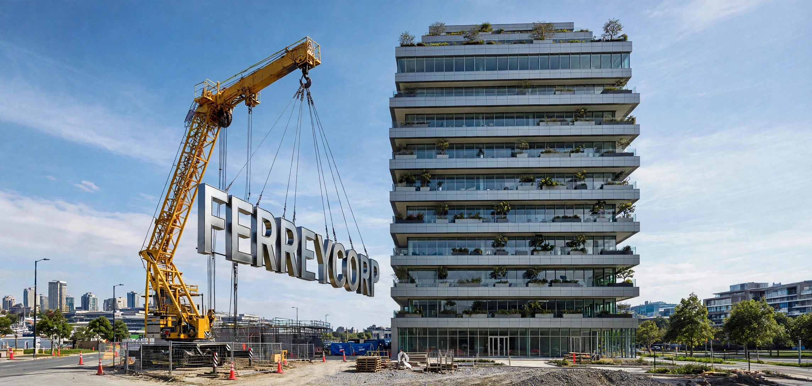

FERREYCORP — El edificio. Toca un piso para entrar a su capítulo: 01 Apertura, 02 Planeación, 03 Organización, 04 Dirección, 05 Control, 06 Mejoras M1–M7, 07 Análisis crítico, 08 Conclusiones, 09 Reflexión individual, 10 Conducta resiliente.